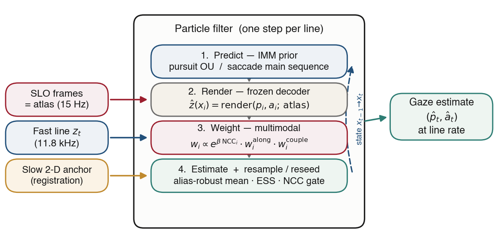
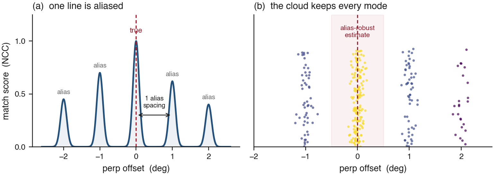
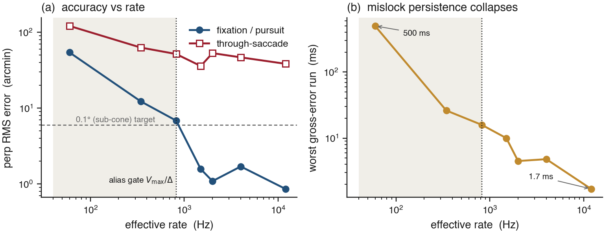
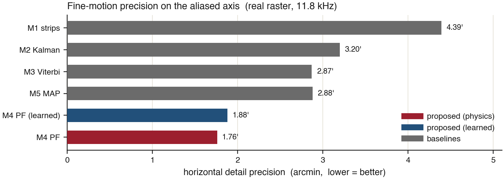
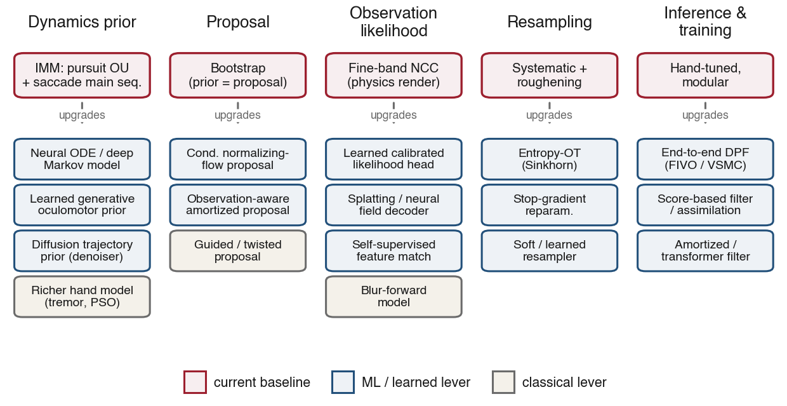

Preprint · under review
Resolving retinal aliasing with a saccadic-dynamics prior and a slow two-dimensional anchor
Kodiak
A scanning ophthalmoscope acquires the retina one fast line at a time, producing a measurement stream at tens of kilohertz that is, in principle, an ideal substrate for high-rate gaze estimation. In practice a single line is a weak and ambiguous observation: the retina is quasi-periodic, so one line matches a reference at many spatial offsets and the standard cross-correlation estimator commits to the wrong match whenever the eye moves quickly. We cast per-line gaze estimation as recursive Bayesian inference and solve it with a particle filter whose belief is deliberately multimodal. Each particle proposes a gaze state, renders the line it would produce from a recent frame through a frozen differentiable decoder, and is scored by appearance match; an interacting-multiple-model prior built from the oculomotor main sequence propagates the cloud, and a slow two-dimensional registration re-anchors it when appearance becomes uninformative. We characterize the method on a controlled synthetic benchmark with known ground truth and deploy it on real captures up to the 11.8 kHz line rate. With exact physics and labels, fixation and smooth-pursuit error reaches \(0.86'\) at 12 kHz and the rate of persistent tracking failures collapses above a predicted aliasing gate; through-saccade accuracy is shown to be fundamentally limited by motion blur rather than by the estimator. Against five baselines on real data, the filter attains the best fine-motion precision (\(1.76'\)) while preserving the absolute accuracy of the slow channel, and the fixational eye movements it recovers reproduce the expected oculomotor statistics. We position the approach relative to retinal-imaging eye trackers and outline the ground-truth experiments required to establish it at the frontier.
Estimating where the eye points, quickly and precisely, is a shared bottleneck across active vision, gaze-contingent display, retinal imaging, and the study of fixational eye movements. Scanning ophthalmoscopes are attractive sensors for this task because they observe the retina itself rather than the pupil, and because they do so sequentially: a fast scanner sweeps a thin line across the tissue and successive lines accumulate into a frame. The line stream arrives at the scanner’s line rate—here \(11.8\) kHz—while complete frames arrive only at \(14.6\) Hz. A method that could turn each line into a gaze estimate would deliver three orders of magnitude more temporal resolution than frame registration.
The obstacle is that a single line is a poor locator. Retinal appearance is approximately periodic at the scale of the photoreceptor mosaic and of larger vascular structure, so the similarity between an observed line and a reference frame exhibits several near-equal maxima spaced roughly one degree apart (Figure 2a). Any estimator that maintains a single hypothesis—a Kalman filter, or the argmax of a cross-correlation—will intermittently lock to the wrong maximum, and once locked it cannot recover from local evidence alone. This failure is not hypothetical: four single-hypothesis trackers were tried and discarded over the course of this project before we adopted the approach described here.
Our key observation is that the ambiguity is structured and therefore resolvable. The maxima are separated by a known alias spacing; the eye obeys known dynamics (smooth pursuit and drift at low velocity, saccades on a stereotyped peak-velocity–amplitude main sequence); and a slow but unambiguous absolute fix is available from frame registration. A representation that carries all the maxima simultaneously, weights them by a physically grounded motion model, and falls back on the slow fix when appearance fails can track the correct branch through motion that defeats a single-hypothesis estimator. A particle filter realizes exactly this representation.
A useful way to read the geometry is that one axis is easy and one is hard, set entirely by the line orientation. Motion along the line shifts a one-dimensional signal within the sweep and is recovered by a direct, unimodal measurement—the trusted channel. Motion across the line moves the sweep onto different tissue and is recoverable only by two-dimensional appearance matching—the aliased, multimodal channel. In our raster the fast sweep is a column, so the trusted axis is vertical and the hard axis is horizontal; the method targets the hard axis and reuses the trusted axis as a low-variance measurement.
Contributions.
At each line index \(t\) the sensor returns a one-dimensional measurement \(z_t \in \mathbb{R}^{L}\): the intensity profile of one fast sweep, acquired at time \(t/f_{\text{line}}\) with \(f_{\text{line}}=11.8\) kHz. A recent frame, registered into a common coordinate frame, serves as an appearance map (atlas) \(\mathcal{A}\). We seek the two-dimensional gaze at line rate, decomposed into the trusted along-axis position and the aliased across-axis (perp) position.
Forward model. Given a gaze state, the line the sensor would observe is obtained by sampling the atlas along the swept path. We write this as a differentiable decoder \(\hat z = g(p, a; \mathcal{A})\), where \(p\) is the perp coordinate, \(a\) the along coordinate, and \(g\) is bilinear atlas interpolation along the sweep. Because the scanner advances independently of the eye, the observed line changes for two reasons—the known raster advance and the unknown eye motion. We absorb the former by centering the decoder window on the current scan column, so \(p\) is the gaze residual relative to where the scan nominally points; the slow registration supplies the absolute offset, recovered as \(\hat x_{\text{gaze}}=\text{anchor}_x + \hat p\) and \(\hat y_{\text{gaze}}=\text{anchor}_y + \hat a\).
Why the perp likelihood is multimodal. The appearance match \(s(p) = \text{NCC}\!\left(z_t,\, g(p,a;\mathcal{A})\right)\) inherits the retina’s quasi-periodicity: it has a sharp true peak and a comb of alias peaks at spacing \(\Delta\) (Figure 2a). A point estimator reduces \(s(p)\) to \(\arg\max_p s(p)\) and is therefore one bad line away from a persistent mislock. The inference problem is to maintain the full posterior over \(p\) and resolve the comb using dynamics and the slow anchor.
The aliasing gate. A saccade of peak velocity \(V_{\max}\) displaces the gaze by \(V_{\max}/f\) between consecutive samples at rate \(f\). When this per-sample displacement is smaller than the alias spacing \(\Delta\), a saccade cannot carry the estimate a full alias period within one step, so it cannot seed a persistent jump to a wrong branch. This defines a gate rate \(f^\star = V_{\max}/\Delta \approx 826\) Hz above which persistent mislocks should be suppressed—a prediction we test directly in §5.1.

We approximate the filtering posterior \(p(x_t \mid z_{1:t})\) by a weighted particle set [7, 8] \(\{(x_t^{(i)}, w_t^{(i)})\}_{i=1}^{N}\) with state \(x_t = (p, a, v_p, v_a, m)\): perp and along positions, their velocities, and a discrete mode \(m \in \{\textsf{pursuit}, \textsf{saccade}\}\). One step implements the recursion
\[ p(x_t \mid z_{1:t}) \;\propto\; p(z_t \mid x_t)\!\int p(x_t \mid x_{t-1})\, p(x_{t-1}\mid z_{1:t-1})\,dx_{t-1}. \]The transition \(p(x_t \mid x_{t-1})\) is an interacting-multiple-model prior. In pursuit mode, velocity follows a band-limited Ornstein–Uhlenbeck process with a hard acceleration cap, modeling drift and smooth pursuit. In saccade mode, onset draws an amplitude \(A\) and direction and emits a ballistic minimum-jerk velocity pulse whose peak obeys the measured main sequence [31], \(V_{\text{peak}}(A) = V_{\max}\,(1 - e^{-A/A_0})\); peak velocity is thus tied to amplitude by construction, with no free process-noise scale. Modes switch under a fixed hazard (a \(2\times2\) transition matrix). We deliberately exclude a large-variance random-walk mode: it admits envelope-following solutions that correlate with the stimulus but not with true motion.
The likelihood factors into three conditionally independent terms,
\[ p\!\left(z_t \mid x_t^{(i)}\right) \;=\; \underbrace{\exp\!\big(\beta\,[\,\text{NCC}_i - \textstyle\max_j \text{NCC}_j\,]\big)}_{\text{appearance (perp), multimodal}} \;\cdot\; \underbrace{\exp\!\Big(-\tfrac{1}{2}\big(\tfrac{a^{(i)}-\tilde a}{\sigma_a}\big)^2\Big)}_{\text{trusted along}} \;\cdot\; \underbrace{w^{(i)}_{\text{couple}}}_{\text{saccade direction}} . \]Here \(\text{NCC}_i\) is the normalized cross-correlation between the high-passed, z-scored observation \(z_t\) and the particle’s rendered line \(g(p_i, a_i; \mathcal{A})\). Subtracting the running maximum before exponentiation keeps the belief multimodal: particles on rival alias peaks retain non-negligible weight rather than being annihilated. The second term injects the trusted along measurement \(\tilde a\) as a tight Gaussian (\(\sigma_a \approx 2\) px). For saccade-mode particles, \(w^{(i)}_{\text{couple}}\) enforces a straight-trajectory constraint that ties perp displacement to the along displacement, so the trusted axis helps disambiguate saccade direction on the aliased axis.
We read out an alias-robust point estimate by restricting the weighted mean to particles within half an alias spacing of the maximum-weight particle \(i^\star\):
\[ \hat p_t = \frac{\sum_{i \in \mathcal{N}} w^{(i)} p^{(i)}}{\sum_{i \in \mathcal{N}} w^{(i)}}, \qquad \mathcal{N} = \big\{\, i : |p^{(i)} - p^{(i^\star)}| \lt \tfrac{1}{2}\Delta \,\big\}, \qquad \text{ESS} = \Big(\textstyle\sum_i (w^{(i)})^2\Big)^{-1}, \]preventing a distant alias cluster from biasing the estimate. Two corrective mechanisms are kept separate (Figure 2b). Resampling (systematic, with roughening) fires whenever \(\text{ESS} \lt N/2\); the sharp true peak drives this on nearly every healthy step, so it is ordinary maintenance. Reacquisition is gated on observation quality, not ESS: if the best NCC stays below a threshold for a short window (or a hard coast cap is reached), all particles are redrawn around the slow absolute anchor. The anchor enters as an absolute measurement, not a veto, which bounds the worst-case coast and guarantees recovery.
Unless noted, the configuration is \(N = 300\) particles, \(\beta = 20\), line length \(200\), with the physics appearance likelihood; an optional learned likelihood (§5.3) replaces only the appearance term. The slow anchor is the median of per-strip registration shifts, following the strip-tracking method of [1].
We evaluate three questions in turn: (i) under ideal conditions, where does per-line passive reconstruction succeed and where does it fail (§5.1)? (ii) on real data, how does the filter compare to strong baselines (§5.2)? and (iii) which components matter (§5.3)? We first verify the forward model itself: sampling the atlas at the registered gaze reconstructs held-out real lines at correlation \(0.829\) against a noise floor of \(0.873\) (error \(1.35\times\) the floor, within a pre-registered \(1.6\times\) gate), so a mismatch the filter observes reflects gaze, not decoder error.

We render synthetic line streams from a known atlas with known gaze trajectories (drift, microsaccades, and main-sequence saccades) at the real per-column timing and measured per-rate noise, and sweep the effective rate through the predicted gate \(f^\star = 826\) Hz. Because the generating atlas is the decoder, this isolates the estimator from forward-model error. Two results stand out (Figure 3, Table 1).
First, fixation and smooth-pursuit error decreases monotonically with rate and crosses sub-\(0.1^\circ\) above the gate, reaching \(0.86'\) at \(12\) kHz. Second, the persistence of gross errors—the worst run-length of large-error samples, measured in time so rates are comparable—collapses across the gate, from \(500\) ms below it to \(\le 10\) ms above it. This confirms the prediction of §3: above \(f^\star\) a saccade cannot jump a full alias period in one step, so persistent mislocks cannot form, and the residual gross errors are brief blur transients. Through-saccade accuracy, by contrast, does not reach sub-\(0.1^\circ\) at any rate: during the fast phase, motion blur drives the appearance match below lock, so the passive observation is genuinely uninformative about perp—a sensor limit, present even with exact physics.

| Rate | Fix RMS | Sac RMS | Fix gross | Sac gross | Persist max | Lock fix | Lock sac |
|---|---|---|---|---|---|---|---|
| 60 Hz | 54.22' | 121.2' | 0.197 | 0.500 | 500.0 ms | 0.70 | 0.12 |
| 344 Hz | 12.28' | 62.9' | 0.028 | 0.426 | 26.2 ms | 0.94 | 0.26 |
| 820 Hz | 6.85' | 51.7' | 0.007 | 0.231 | 15.9 ms | 0.97 | 0.42 |
| 1500 Hz | 1.57' | 35.9' | 0.001 | 0.281 | 10.0 ms | 1.00 | 0.48 |
| 2000 Hz | 1.09' | 53.1' | 0.000 | 0.286 | 4.5 ms | 1.00 | 0.49 |
| 4000 Hz | 1.70' | 46.7' | 0.000 | 0.296 | 4.8 ms | 1.00 | 0.50 |
| 12000 Hz | 0.86' | 38.4' | 0.000 | 0.204 | 1.7 ms | 1.00 | 0.70 |
We compare six methods on a real pursuit raster under an identical evaluation protocol (\(2\) ms smoothing, drift removal, per-axis affine calibration to the stimulus, then correlation, RMS, and a precision measure equal to the RMS of \({>}25\) ms detail). The stimulus is the pursuit target, not the eye, so target correlation saturates near a pursuit-lag ceiling of \(r \approx 0.9\) and does not separate methods; fine-motion precision is the discriminating metric. The baselines span the natural alternatives: frame registration only (M0), strip tracking (M1) [1], a constant-velocity Kalman filter (M2), an offline Viterbi decode of the perp likelihood (M3), and a batch maximum-a-posteriori smoother (M5).
The particle filter attains the best fine-motion precision on the aliased axis—\(1.76'\) at the line rate, roughly \(1.6\times\) better than the strongest baseline—while matching the absolute accuracy of frame registration, since the slow anchor pins every method (Figure 4, Table 2). Two independent checks establish that the kilohertz content is real rather than interpolated frame motion. In the \(8\)–\(300\) Hz band, above the frame chain’s \(7.3\) Hz Nyquist, two independent reconstructions (strip tracking and Viterbi) agree at \(r = 0.574\) (\(n = 90{,}346\)) while each correlates with the interpolated frame chain at only \(r \approx 0.01\)–\(0.02\). And the filter recovers \(1018\) microsaccades (\(20.9\)/s, median amplitude \(3.4'\)) with a main-sequence log-log slope of \(0.68\) (correlation \(0.72\)); frame registration alone recovers none.

| Method | Rate (Hz) | r x | r y | RMS x | Prec x | Prec y | valid |
|---|---|---|---|---|---|---|---|
| M0 · frame registration | 15 | 0.906 | 0.739 | 16.0' | — | — | 72% |
| M1 · strip tracking [1] | 1478 | 0.878 | 0.737 | 19.8' | 4.39' | 1.25' | 72% |
| M2 · Kalman fusion | 11823 | 0.893 | 0.742 | 17.3' | 3.20' | 1.21' | 73% |
| M3 · Viterbi decode | 11823 | 0.902 | 0.748 | 16.5' | 2.87' | 1.20' | 72% |
| M5 · batch MAP | 11823 | 0.901 | 0.747 | 16.5' | 2.88' | 1.20' | 72% |
| M4 · particle filter (ours) | 11823 | 0.906 | 0.752 | 16.0' | 1.76' | 1.06' | 70% |
Learned appearance likelihood. The §5.1 analysis identifies blur as the saccade bottleneck, which motivates replacing the physics appearance term with a small learned, blur-aware calibration head (trained only on labeled synthetic; disjoint train/validation seeds). It leaves fixation unchanged (sub-\(0.1^\circ\) preserved) and reduces held-out saccade gross error from \(0.222\) to \(0.049\) and RMS from \(78.5\) to \(22.6\) atlas rows, while remaining above \(0.1^\circ\)—blur is a genuine physical limit, not a modeling artifact. On real data the learned head reaches \(1.88'\) precision, comparable to the physics model.
Online deployment without a co-registered raster. On a true line-scan capture with only \(20\) Hz absolute anchors, the per-line channel adds sub-anchor content on the discriminating vertical axis: correlation with an independent pupil tracker rises from \(r = 0.031\) (anchors only) to \(0.259\) (full reconstruction). Because the tracker is an independent measurement path, this rise is evidence of genuine sub-anchor gaze content. A diagnostic attributes the residual vertical gap to physiology and field-of-view loss, not the estimator: a frame-only control reaches the same vertical ceiling (\(r = 0.74\)), and in-field coverage drops from \(98\%\) on left gaze to \(32\%\) on temporal gaze for this eye—a centration limit, addressable in hardware.
This deployment is validated by self-consistency and independent-path agreement, which are necessary but not sufficient: without a co-registered ground truth, these numbers bound rather than prove correctness. Closing this gap is the first item of §7.
The filter of Section 4 is, by design, a 2018-era differentiable particle filter built by hand: every module is a fixed, interpretable choice. That made it a strong, debuggable baseline—but each choice is also a hypothesis, and the modern toolkit gives a concrete way to relax almost all of them. This section enumerates the load-bearing assumptions and, for each, the classical and learned levers that could break it, weighting recent work. Figure 5 maps the design space; Section 7.7 turns it into an ablation study. The thesis is that on a cone-resolved AOSLO substrate with artificial-eye ground truth, replacing these modules one at a time is a credible route to state of the art on accuracy and rate simultaneously—not just the rate/robustness frontier we already occupy.

| Assumption (current choice) | Why it may bind | Candidate replacements | Lever |
|---|---|---|---|
| Hand-built IMM dynamics (pursuit OU + main-sequence saccade) | Mis-specified kinematics bias the alias tie-break and through-saccade prediction | Deep Markov model [18], neural ODE [19], selective state-space (Mamba) [21]; learned generative oculomotor prior (§7.2) | ML |
| Bootstrap proposal (prior = proposal) | Wastes particles when the observation is sharp; slow reacquisition | Conditional normalizing-flow proposal [14]; observation-aware amortized proposal [9, 10] | ML |
| Fine-band NCC appearance likelihood | Collapses under saccadic blur; not calibrated; hand-chosen band | Learned calibrated head; splatting/neural-field decoder [39, 40]; self-supervised features [41]; explicit blur forward model (§7.4) | ML |
| Non-differentiable systematic resampling | Blocks end-to-end training of every other module | Entropy-OT resampling [12]; stop-gradient [13]; soft/learned resampler [10, 11] | ML |
| Hand-tuned, modular components | No joint optimization; constants set by grid search | End-to-end DPF training with FIVO/VSMC objectives [16, 17] (§7.5) | ML |
| Weighted-particle posterior | Particle depletion on the sharp peak; fixed \(N\) | Score-based filter / data assimilation [29, 30]; diffusion posterior (§7.3) | ML |
| Slow strip-registration anchor | Argmax anchor can itself mislock; caps absolute accuracy | Learned descriptor registration [5, 6]; multi-hypothesis anchor | ML |
| Video-rate non-AO substrate | Low per-line SNR sets the precision floor | AOSLO cone-resolved imaging (§7.6) | C |
| Validation vs. target + pupil tracker | Self-consistency is necessary, not sufficient | Artificial-eye ground truth; off-prior trajectories (§7.6) | C |
The dynamics prior does two jobs: break alias ties and bridge blur dropouts. Both are only as good as the kinematics it encodes, and our IMM is a deliberate caricature (two modes, a single main-sequence curve, an OU drift). The question the user-facing roadmap raises—can microsaccade dynamics be modeled with ML, and how?—has a rich and recent answer. Classical models already go beyond ours: the integrated self-avoiding-random-walk model unifies drift and microsaccades under one activation field [32], and the main sequence itself is the saccade constraint [31]. On the learned side, gazeNet shows raw-gaze event structure is learnable end-to-end [33]; deep Markov [34] and drift-diffusion [35] scanpath models generate goal-directed gaze; and 2025 diffusion models (ScanDiff [36], DiffEye [37]) generate continuous trajectories rather than discrete fixations. Three concrete routes, in increasing ambition:
There is a diffusion idea latent in this architecture, along two distinct axes. First, diffusion as the trajectory prior: planning-as-inference work treats a whole trajectory as a sample from a learned denoiser and conditions it by guidance or inpainting [25, 26, 27, 28]. A trajectory diffusion model trained on real oculomotor data is exactly a learned, sample-able prior over gaze paths; the slow anchor and the trusted along channel become inpainting/guidance constraints, and a smoothing pass over a window of lines becomes guided denoising—our batch-MAP smoother (M5) is the crude, Gaussian special case of this. Second, diffusion as the posterior representation: score-based data assimilation [29] and the ensemble score filter [30] store the filtering density in a score network and sample it by reverse diffusion, sidestepping particle depletion on our razor-sharp peak. The aliased, multimodal perp posterior is precisely the setting where a score model’s unlimited sampling could beat a fixed-\(N\) cloud. A concrete hybrid: keep the particle filter for the trusted, unimodal along axis, and use a conditional diffusion/score model for the multimodal perp posterior, guided by the appearance likelihood—a multimodal analogue of the Rao-Blackwellized filter.
The decoder is the most upgradable module. Our bilinear atlas sampler is a fixed, low-capacity forward model; the appearance score is a hand-chosen high-pass NCC that collapses under blur (the measured saccade bottleneck, §5.1). Modern differentiable rendering—neural fields [38], 3D Gaussian splatting [39], and inverse-rendering variants [40]—offers fast, high-fidelity, fully differentiable decoders that could render cone-resolved lines and back-propagate to gaze. A learned calibrated likelihood head (our ablation, §5.3) is the minimal version; a blur-aware forward model that integrates the atlas over intra-line motion is the physically principled version; and self-supervised features [41] could supply a match metric robust to the SNR and contrast changes that defeat raw NCC. The key property to preserve is multimodality: whatever replaces NCC must yield a likelihood over all alias offsets, not a single regressed position.
Today the modules are tuned separately and the constants set by grid search. Making resampling differentiable [12, 13] turns the whole filter into a single trainable network [9, 10] optimizable end-to-end against the FIVO/VSMC bound [16, 17] on labeled synthetic and (self-supervised) on real streams, so the proposal, dynamics, and likelihood are learned for the filter’s own loss rather than in isolation. A more radical option is to amortize inference entirely—a transformer or state-space model [21] that maps a window of lines plus the anchor to a posterior—trading the explicit belief for speed, which matters for closed-loop latency.
These levers compose, so the study is a structured sweep, not a single comparison. We propose: (i) fix the AOSLO + artificial-eye benchmark and the metrics (perp/along RMS, gross-error persistence, lock-rate vs. velocity, latency); (ii) establish the current hand-built filter and a strip-argmax baseline as the two anchors; (iii) swap in one column of Figure 5 at a time—learned dynamics, flow proposal, learned/rendered likelihood, differentiable resampling, score/diffusion posterior—measuring marginal effect and interaction; (iv) then train the best combination end-to-end with a FIVO/VSMC objective; (v) report on- and off-manifold trajectories separately to keep learned priors honest. The deliverable is a quantified map of which modern component actually moves which metric—the empirical core of the claim that the field can be broken open.
Scan-line gaze estimation is best posed as multimodal Bayesian filtering: keeping the aliased appearance likelihood intact and resolving it with an oculomotor prior and a slow anchor gives the best fine-motion precision among strong baselines and a clean, predictable failure boundary. That result was obtained with a deliberately classical, hand-built filter. Its value is as much as a baseline and a scaffold as a result in itself: every module is a fixed choice with a modern, learnable replacement, and the controlled benchmark gives the ground truth to test each one. On a cone-resolved substrate with artificial-eye validation, walking the design space of Figure 5 is, we argue, a credible path to state of the art on rate, dynamic range, and accuracy at once.
The reconstructed gaze trajectory at \(11.8\) kHz overlaid on the raster is available at
results/animations/gaze2d_m4_dpf_11823.mp4 (and \(1.18\) kHz at
gaze2d_m4_dpf_1182.mp4). Embed or link these on the published page.
The method is implemented in filter.py (particle filter), dynamics.py (IMM
prior), decoder.py (differentiable renderer), and is driven for this benchmark by
khz2d_methods.py. Figures on this page are produced by docs/make_figures.py from the
numbers in results/.
@misc{perlroth2026scanline,
title = {Gaze Tracking at the Scan-Line Rate with a Multimodal Particle Filter},
author = {Perlroth, Ashton},
year = {2026},
note = {Preprint, Kodiak gaze-model project}
}
Reference details are provided for orientation; author lists and venues should be verified against the primary sources before submission.